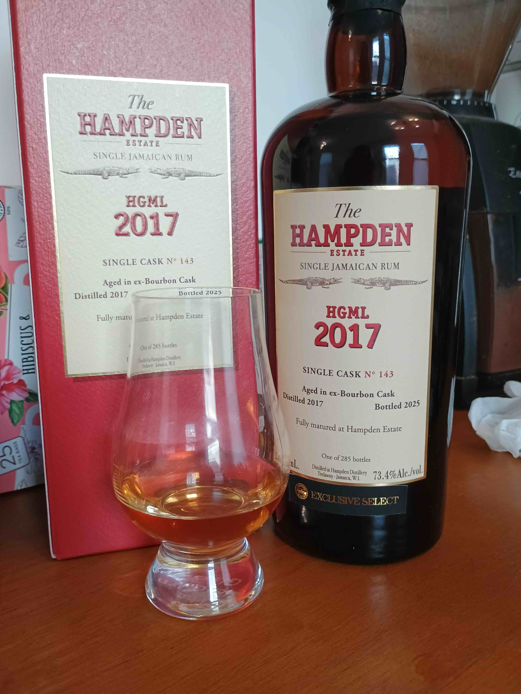

Reviewed May 26, 2026

This is the Hampden Astor select HGML 2017 8-year single cask. Aged in an ex-bourbon cask at Hampden Estate and bottled at 73.4% ABV (!!!). One of 285 bottles. Astor Wines exclusive. Reviewed neat and with some water in a Glencairn.
On the nose, I get loads of fruit, lead by very very ripe blueberry. There's a whole melange of tropical fruit but it's hard for me to pick out individual ones beyond the main blueberry note. I also get cherry cola.
On the palate, ripe blueberries again, loads of vanilla, and the two come together like pancakes covered in blueberry compote. There's a pleasant viscosity neat. But make no mistake, this comes in HOT as expected at this proof.
The finish lasts forever. The vanilla fades for me and I start to get more distinct fruits, including pineapple, guava, and mango. I also get a sort of dry tartness after the main flavors subside, which I also get from Rum Fire.
This is a massive, terrific rum. At $240 it's the most I've spent on a bottle, but given the quality and especially being sold at cask strength, I think it's worth that. It's every-fruit and berry-forward and takes to the cask beautifully. Fun to try neat but definitely needs water for regular sipping given the ABV. I haven't mixed with it yet as of writing this, but I bet it would be transcendent as part of a Mai Tai blend.